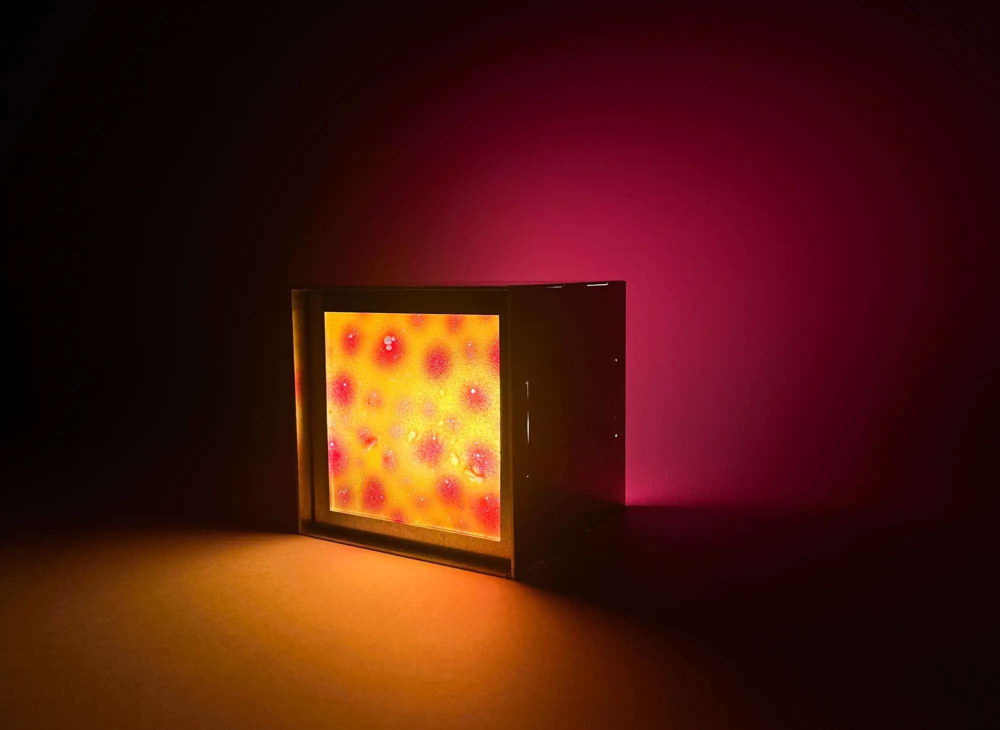
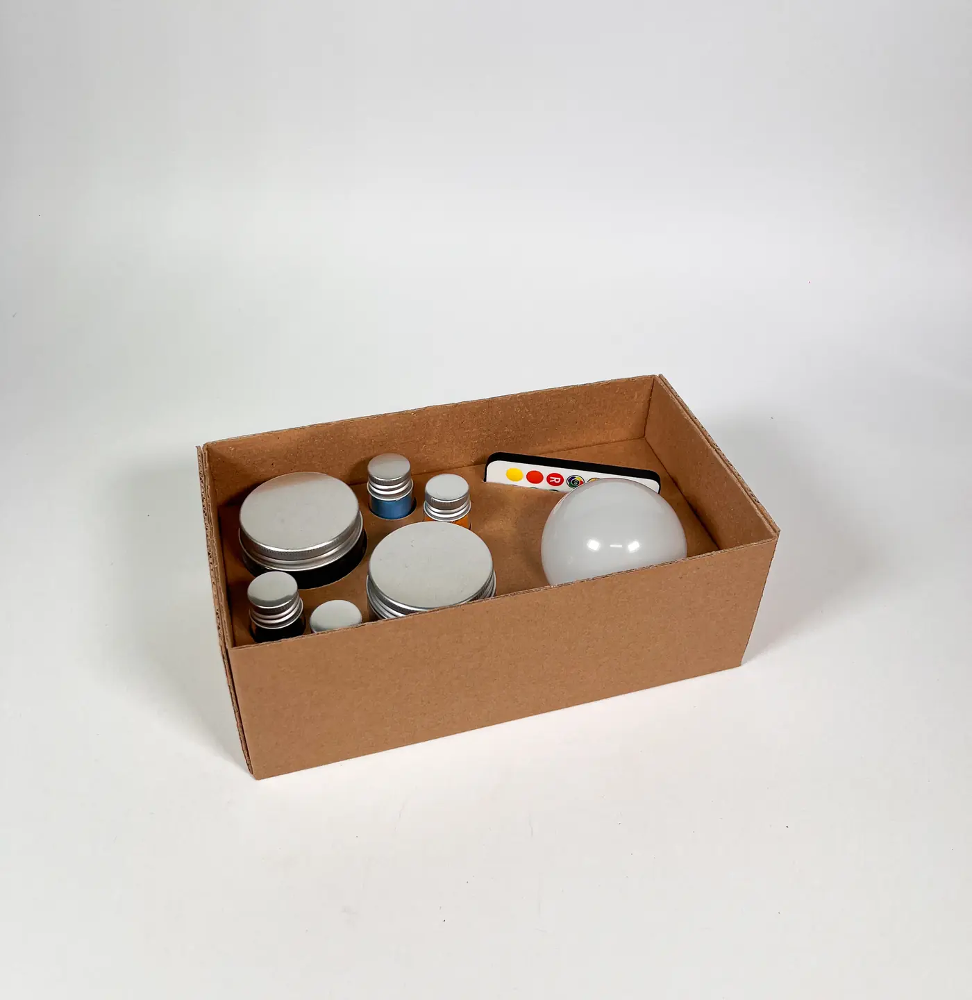
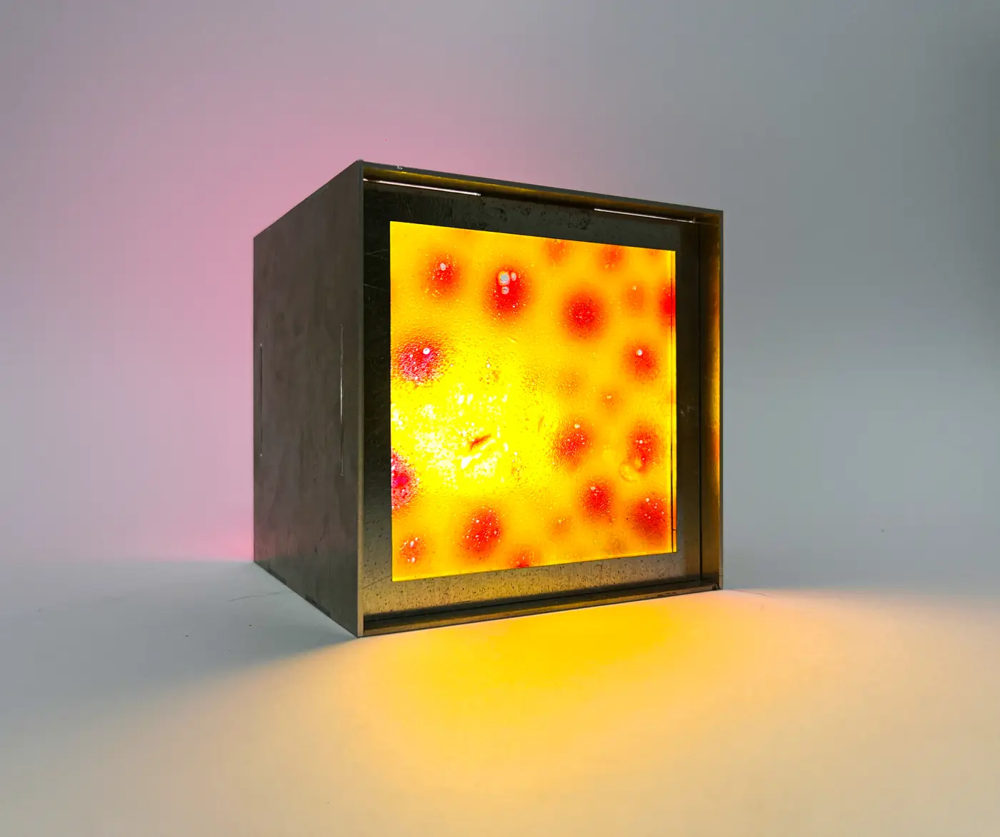
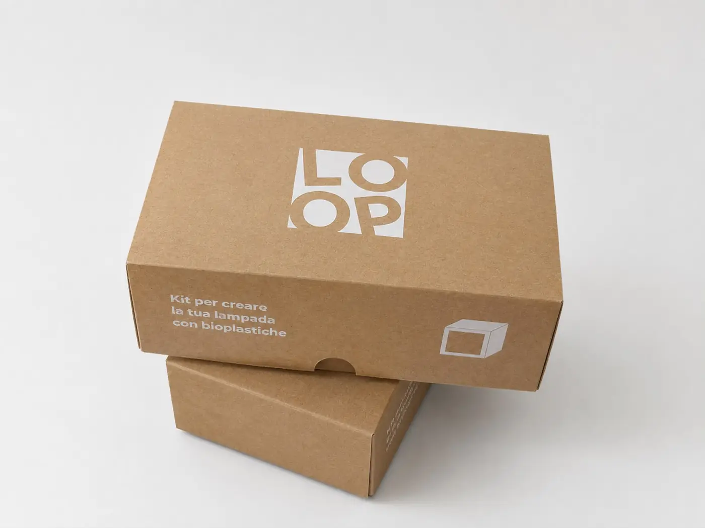
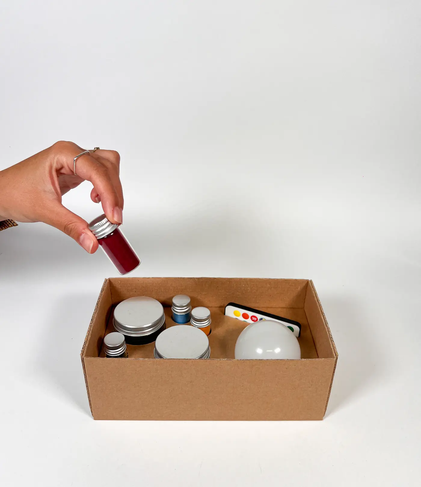
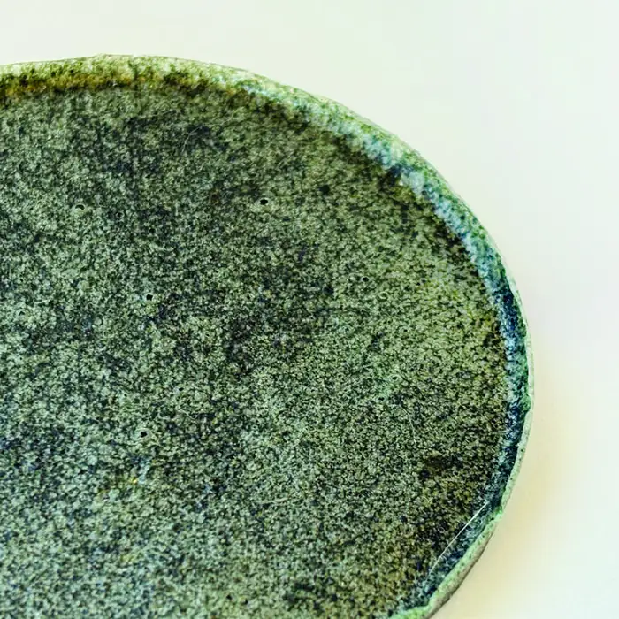
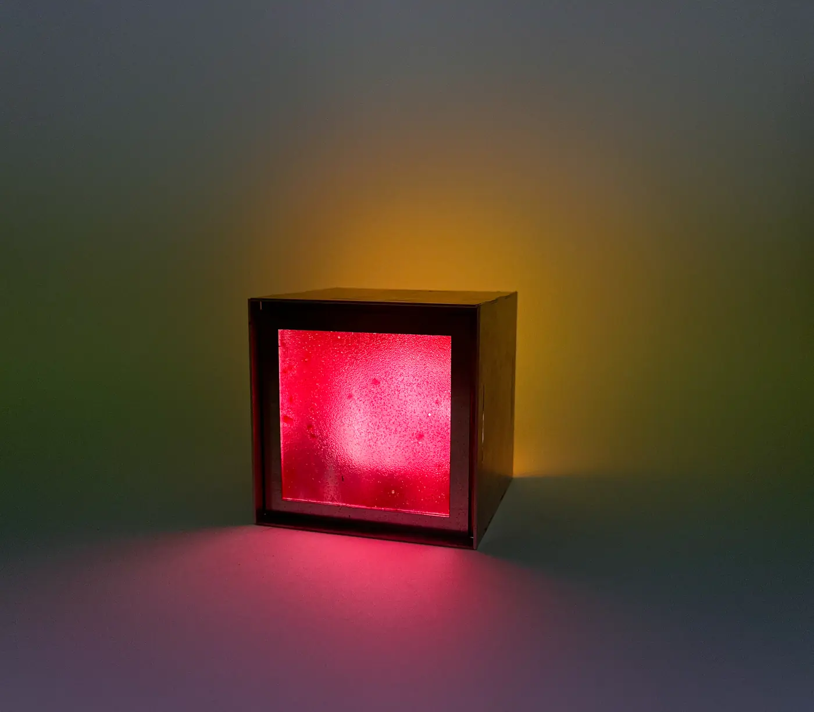
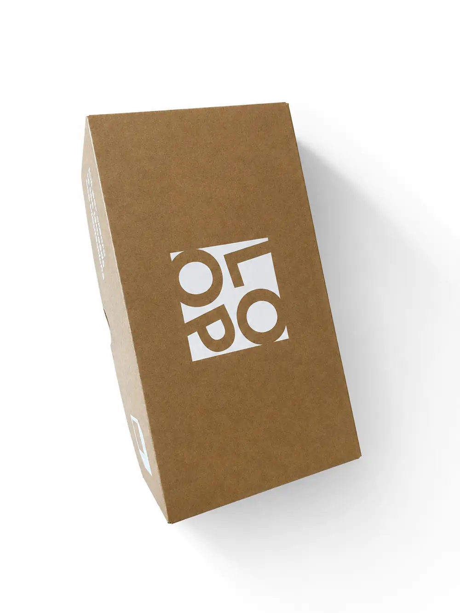
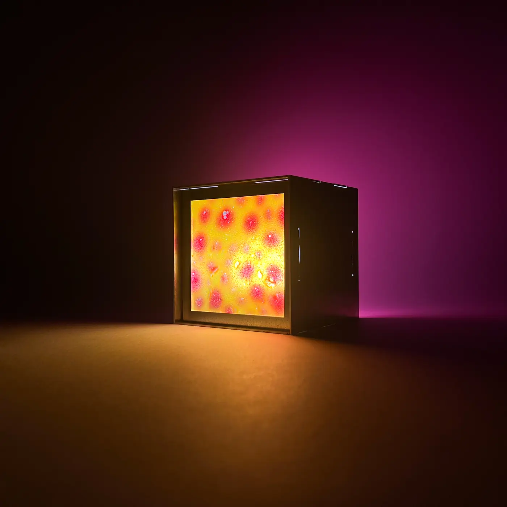
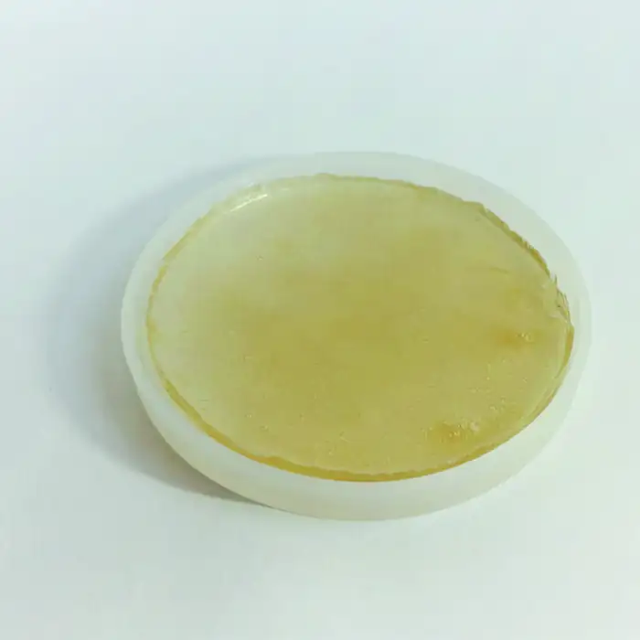

Gli effetti che si vedono più spesso nei siti premiati su Awwwards, rifatti con le foto e i testi di LOOP. Scegliamo quelli che ci piacciono e li portiamo nel sito.
09 — Lo sfondo cambia coloreScorrendo, la pagina prende il colore della struttura. Le sezioni si fondono una nell'altra.
Giallo
Arancione
Bianco
Nero
Alluminio
10 — Interruttore che accende la paginaVisto su siti di lampade (ATMOS, Daylight): la pagina è al buio, premi e si accende con la luce che si espande.

11 — Foto che si scoprono a tendinaOgni immagine si apre dal basso quando entra nello schermo, con un leggero zoom. Classico dei siti di moda e d'arredo.

Il kit aperto

Pois in controluce

Le scatole
12 — Torcia sul materialeCome nei siti di gioielli e materiali (Cartier): al buio, il cursore illumina e ingrandisce la bioplastica.
Guarda da vicino
13 — TelecomandoIspirato a Patatap e Teenage Engineering: premi i tasti (o 1–5 sulla tastiera) e la luce cambia colore.
14 — Sequenza allo scrollCome le pagine prodotto Apple: le immagini cambiano scorrendo come un video. Qui con i 5 colori; con le foto del montaggio diventa il montaggio vero.
Giallo
15 — Mazzetta di bioplasticheCome una mazzetta Pantone: passa sopra e i campioni si aprono a ventaglio; clicca per tirarne fuori uno.
16 — Testo che si allungaCome Obys: le lettere si stirano in verticale quando scorri veloce.
Bioplastica fatta a mano
17 — Colonne a velocità diverseCome Studio Freight e Locomotive: le colonne di foto scorrono una più veloce dell'altra.





18 — Immagine ferma, testo che scorreCome Aesop: a sinistra la foto resta ferma e cambia, a destra scorrono gli ingredienti.

Base
Pectina
Dalla buccia della frutta: si scioglie in acqua calda e diventa una lastra.
Colore
Curcuma
Un cucchiaino basta per un giallo caldo e luminoso.
Colore
Barbabietola
Rosso intenso che in controluce diventa rosa.
Colore
Spirulina blu
Un'alga: il blu più freddo della collezione.
19 — Spenta / accesaTrascina la linea: a sinistra la lampada di giorno, a destra al buio. Usato nei siti di illuminazione e di architettura.
↔
20 — Numeri che contanoI numeri del progetto salgono quando entrano nello schermo.
0campioni sperimentati
0basi testate
0cm per lato
0colori della struttura
21 — Monta tu la lampadaCome un gioco (Bruno Simon, Lego): trascina le bioplastiche nelle finestre del cubo.
Fatto! La tua lampada è unica.
22 — Lettere che cadonoLe lettere di LOOP cadono e rimbalzano quando arrivi; trascinale e lanciale.